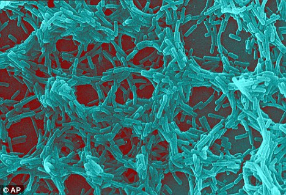
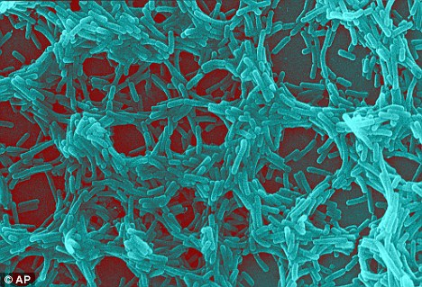
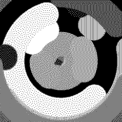
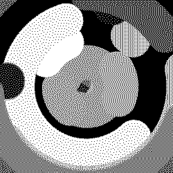
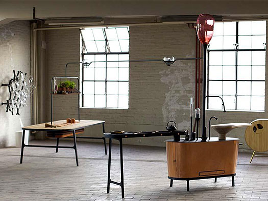
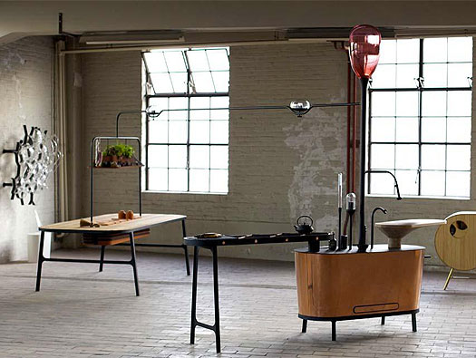

Biohack Academy
documentation
Incubator
My plan is to combinate my incubator with an livestream webcam.
Het bordje die we eerst gebrukte was te klein, en de gaatje waren te klein voor de mosfet.


Microscope
 Spirulina (Arthrospira)
Spirulina (Arthrospira)

Practicum


Inspiration
online and ofline
Film bacteria
(when I was searching for Rhodococcus)
Systems inspiration that I also collect for my graduation project
In order to keep an eye on: http://www.reddit.com/r/cellular_automata/ https://www.khanacademy.org/computer-programming/showcase-elementary-cellular-automaton/5442204856221696


 


 



 
